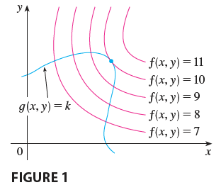

In a previous example, we maximized a volume function \(V = xyz\) subject to the constraint \(2xz + 2yz + xy = 12\), which expressed the side condition that the surface area was 12 m\(^2\).
In this section we present Lagrange’s method for maximizing or minimizing a general function \(f(x, y, z)\) subject to a constraint (or side condition) of the form \(g(x, y, z) = k\).
It’s easier to explain the geometric basis of Lagrange’s method for functions of two variables. So we start by trying to find the extreme values of \(f(x, y)\) subject to a constraint of the form \(g(x, y) = k\). In other words, we seek the extreme values of \(f(x, y)\) when the point \((x, y)\) is restricted to lie on the level curve \(g(x, y) = k\).

Figure 1 shows this curve together with several level curves of \(f\). These have the equations \(f(x, y) = c\), where \(c = 7, 8, 9, 10, 11\). To maximize \(f(x, y)\) subject to \(g(x, y) = k\) is to find the largest value of \(c\) such that the level curve \(f(x, y) = c\) intersects \(g(x, y) = k\). It appears from Figure 1 that this happens when these curves just touch each other, that is, when they have a common tangent line. (Otherwise, the value of \(c\) could be increased further.) This means that the normal lines at the point \((x_0, y_0)\) where they touch are identical. So the gradient vectors are parallel; that is, \(\nabla f(x_0, y_0) = \lambda \nabla g(x_0, y_0)\) for some scalar \(\lambda\).
This kind of argument also applies to the problem of finding the extreme values of \(f(x, y, z)\) subject to the constraint \(g(x, y, z) = k\). Thus the point \((x, y, z)\) is restricted to lie on the level surface \(S\) with equation \(g(x, y, z) = k\). Instead of the level curves in Figure 1, we consider the level surfaces \(f(x, y, z) = c\) and argue that if the maximum value of \(f\) is \(f(x_0, y_0, z_0) = c\), then the level surface \(f(x, y, z) = c\) is tangent to the level surface \(g(x, y, z) = k\) and so the corresponding gradient vectors are parallel.
This intuitive argument can be made precise as follows. Suppose that a function \(f\) has an extreme value at a point \(P(x_0, y_0, z_0)\) on the surface \(S\) and let \(C\) be a curve with vector equation \(\mathbf{r}(t) = \langle x(t), y(t), z(t) \rangle\) that lies on \(S\) and passes through \(P\). If \(t_0\) is the parameter value corresponding to the point \(P\), then \(\mathbf{r}(t_0) = \langle x_0, y_0, z_0 \rangle\). The composite function \(h(t) = f(x(t), y(t), z(t))\) represents the values that \(f\) takes on the curve \(C\). Since \(f\) has an extreme value at \((x_0, y_0, z_0)\), it follows that \(h\) has an extreme value at \(t_0\), so \(h'(t_0) = 0\). But if \(f\) is differentiable, we can use the Chain Rule to write \[ 0 = h'(t_0) = f_x(x_0, y_0, z_0)x'(t_0) + f_y(x_0, y_0, z_0)y'(t_0) + f_z(x_0, y_0, z_0)z'(t_0) = \nabla f(x_0, y_0, z_0) \cdot \mathbf{r}'(t_0) \] This shows that the gradient vector \(\nabla f(x_0, y_0, z_0)\) is orthogonal to the tangent vector \(\mathbf{r}'(t_0)\) to every such curve \(C\). But we already know that the gradient vector of \(g\), \(\nabla g(x_0, y_0, z_0)\), is also orthogonal to \(\mathbf{r}'(t_0)\) for every such curve. This means that the gradient vectors \(\nabla f(x_0, y_0, z_0)\) and \(\nabla g(x_0, y_0, z_0)\) must be parallel. Therefore, if \(\nabla g(x_0, y_0, z_0) \neq \mathbf{0}\), there is a number \(\lambda\) such that \[ \nabla f(x_0, y_0, z_0) = \lambda \nabla g(x_0, y_0, z_0) \] The number \(\lambda\) in Equation 1 is called a Lagrange multiplier. The procedure is described the next page.